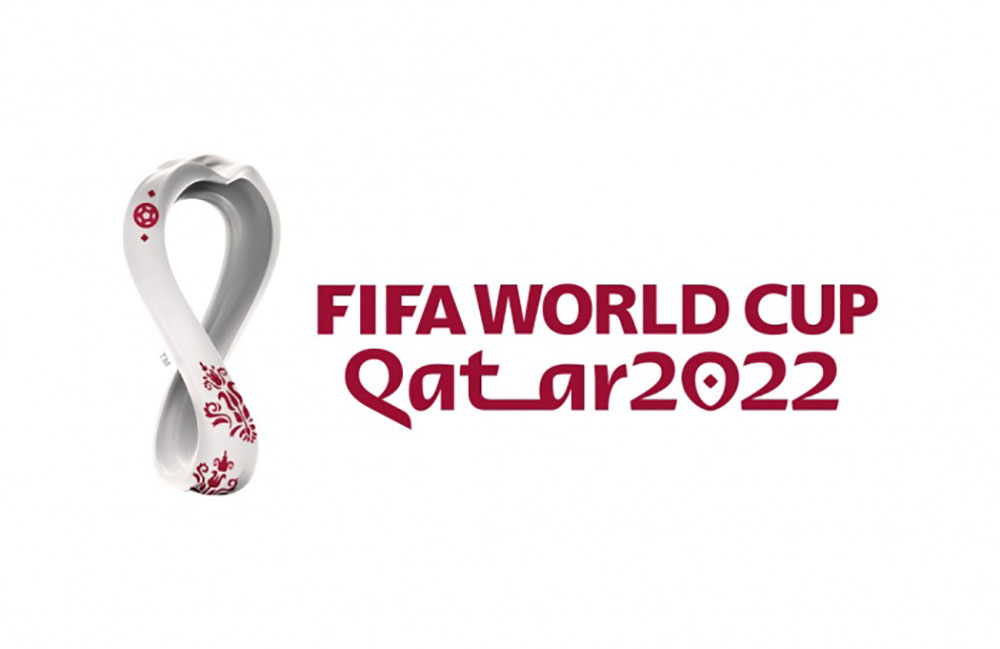

QATAR 2022 INICIO EQUIPOS NOTICIAS CLASIFICACIÓN
La Copa Mundial de la FIFA Catar 2022(en árabe, كأس العالم لكرة القدم قطر 2022) fue la vigésima segunda edición de la Copa Mundial de Fútbol masculino organizada por la FIFA. Esta edición del evento se desarrolló del 20 de noviembre al 18 de diciembre en el otoño de Catar, que consiguió los derechos de organización el 2 de diciembre de 2010.2 Esta fue la tercera vez que el torneo se disputó en el continente asiático tras la edición de 2002 jugada en Corea del Sur y Japón y la de Rusia 2018 (aunque esta última contaba con una sola sede en territorio asiático); y la primera que se celebró en Asia Occidental. También, por primera vez, el torneo tuvo lugar en Oriente Próximo, en un país árabe y de mayoría musulmana, así como el de menor extensión territorial.4 Por otra parte, fue el Mundial de mayor tiempo de espera desde 1950 respecto a su edición anterior, ya que se desarrolló entre noviembre y diciembre de 2022, a diferencia de los habituales junio y julio. Paralelamente, fue la Copa más corta desde 1978, pues la competición se desarrolló solamente durante veintinueve días, a diferencia de los usuales treinta y dos en los últimos campeonatos.56 El campeón fue Argentina, liderada por Lionel Messi, que derrotó en la final por 4-2 en los penaltis a quien hasta entonces era la vigente campeona del mundo, Francia, luego de haber empatado 3-3. De esta forma, se coronó campeona por tercera vez en su historia después de 36 años (la última ocasión había sido en México 1986). Asimismo, se terminó una racha de 4 campeonatos europeos consecutivos, la más larga de un mismo continente. En opinión de diversas personalidades del mundo del fútbol, el encuentro final fue considerado como la mejor final de la historia por el contexto previo y abundancia de situaciones de peligro durante todo el encuentro.7 Es conocido como el «mundial más polémico de la historia», ya que diversas agrupaciones y medios de comunicación expresaron su preocupación acerca de la idoneidad de Catar para acoger el evento, debido a numerosas controversias como la corrupción para adjudicarse como sede, las muertes relacionadas con la construcción de los estadios, los cuestionamientos sobre el respeto de los derechos humanos y sectores que apoyan la visibilización de la homosexualidad en el fútbol profesional, particularmente en los casos de las condiciones laborales de los trabajadores y los derechos de la comunidad LGBT, ya que la homosexualidad se llega a condenar con pena de muerte,así como a las acusaciones contra Catar de apoyar diplomática y financieramente el terrorismo islamista. También fue el «Mundial más caro de la historia» con un costo estimado en 220 mil millones de dólares.
